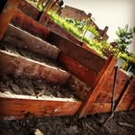
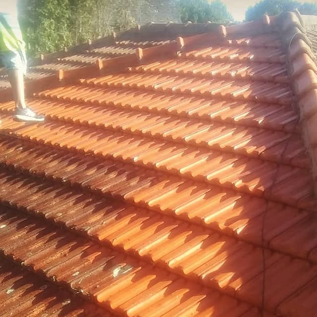
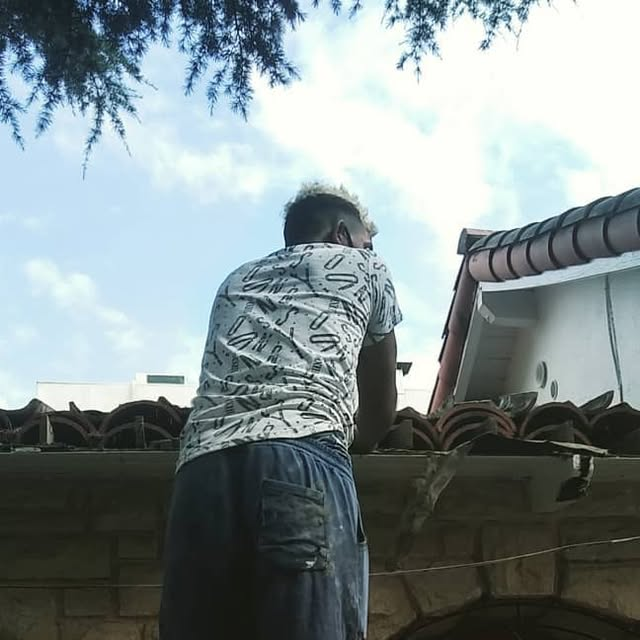
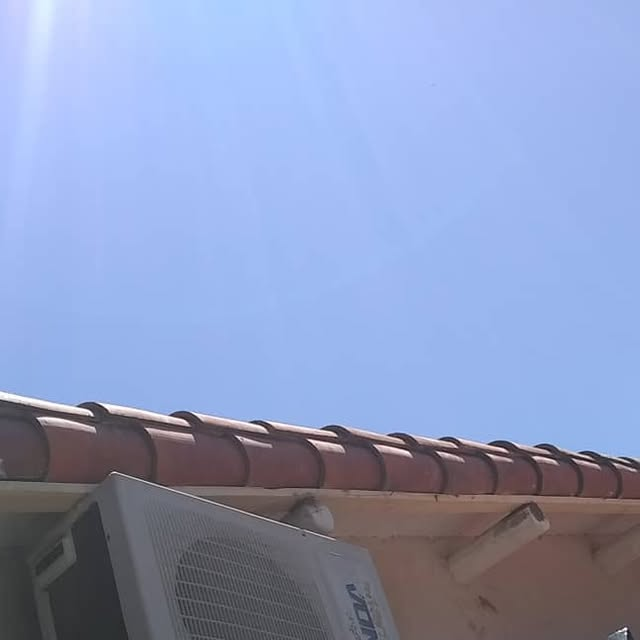
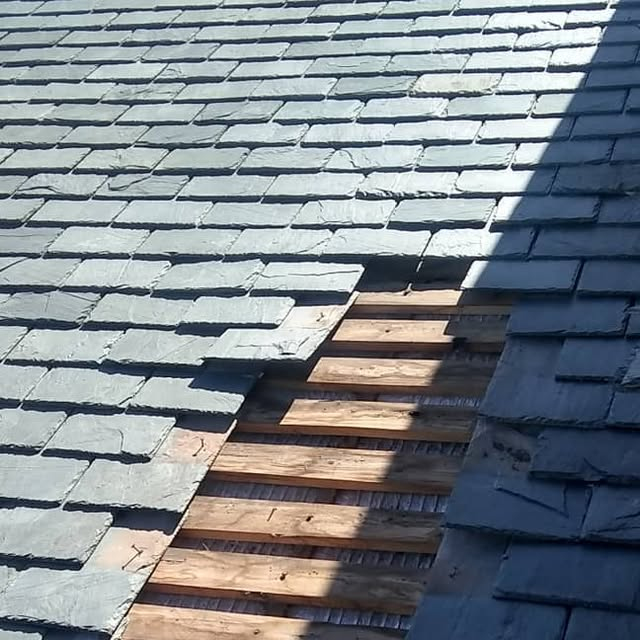
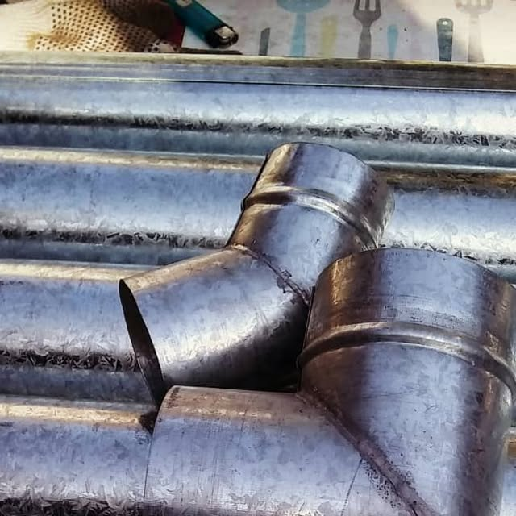
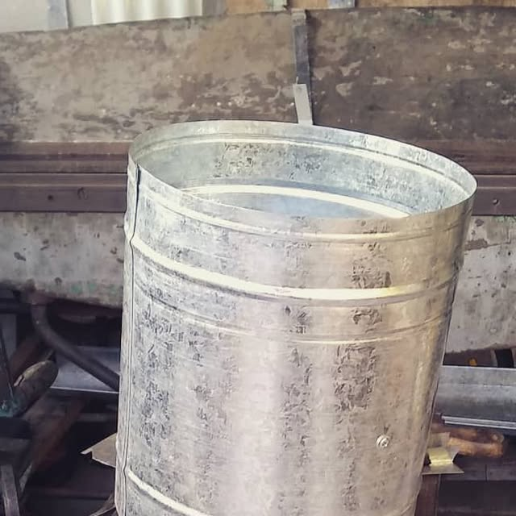
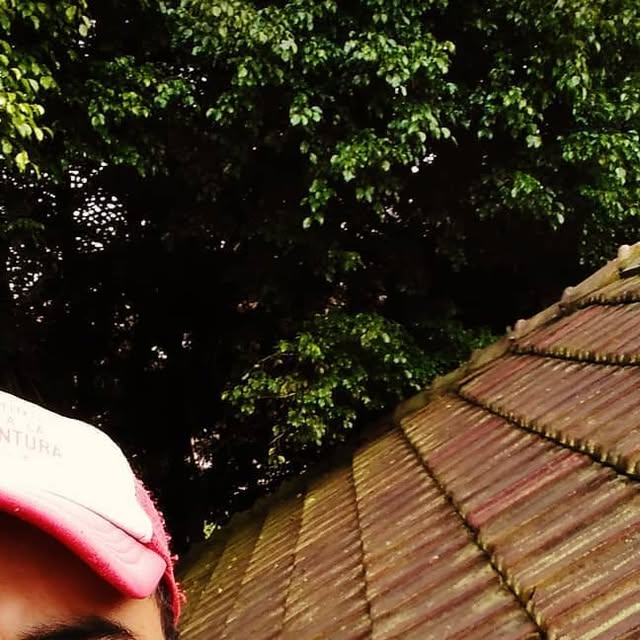
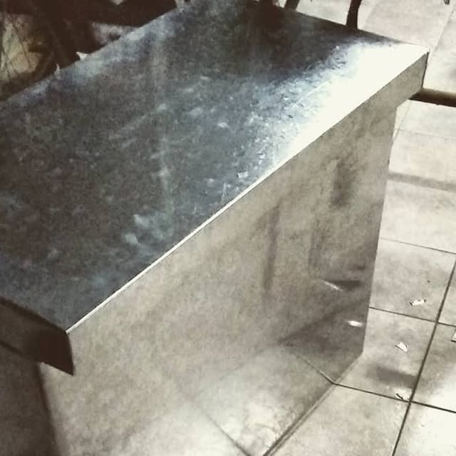

01
Sellado de techos
Sellado completo de techos residenciales para que la lluvia no entre más.

Techos RubénSELLADO DE TECHOS · DORADO
Superficie sellada de verdad: el agua se perla y rueda sin mojar, sin filtrar, sin empozarse.
Lo que hacemos
Techos, terrazas y filtraciones: lo dejamos seco.
Sellado completo de techos residenciales para que la lluvia no entre más.

Reparamos terrazas dañadas por el agua y las dejamos listas para sellar.

Localizamos el punto de entrada del agua y lo reparamos de raíz.
Trabajo real
Fotos reales de trabajos de Techos Rubén.





Dudas
Cotiza hoy
Llama y deja tu techo en manos de Techos Rubén.